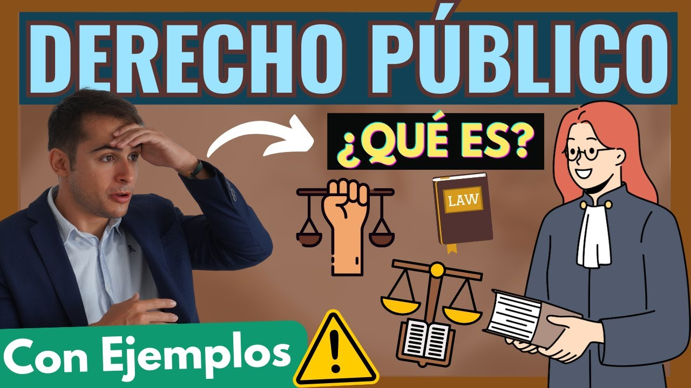
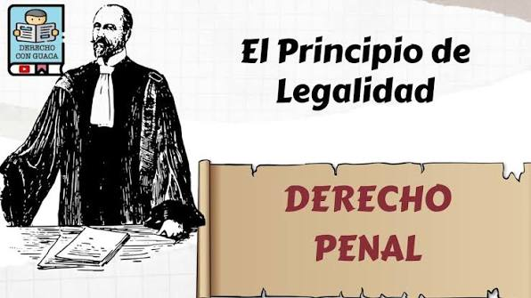
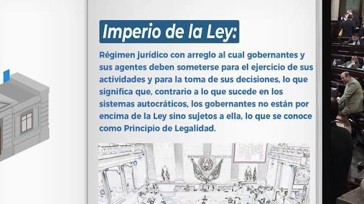
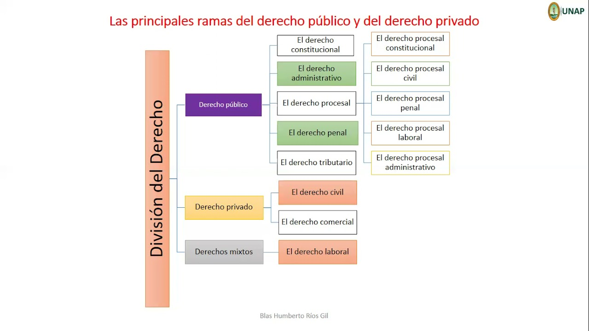

| Concepto | Definicion | Imagen | Mas informacion |
| ¿Qué es el Derecho Público? | Se conoce como derecho público a una parte de los ordenamientos jurídicos cuyas normas atañen al poder público y sus relaciones con los individuos, las organizaciones y consigo mismo, siempre que éste se ejerza como representación de los intereses del Estado. |  |
Consulta para mas informacion |
| Principio de legalidad | Establece que toda acción de los poderes públicos debe estar inscrita necesariamente en el orden jurídico vigente, es decir, debe contar con seguridad jurídica, conforme a su jurisdicción y naturaleza. Es decir: el Estado no puede violar las leyes. |  |
Consulta para mas informacion |
| Principio de imperio | Establece que toda relación entre el Estado y los particulares se ejerce desde una situación de desigualdad en la que el primero tiene el dominio (imperium) por lo que estará ejerciendo una potestad pública. Es decir: el Estado es la autoridad. |  |
Consulta para mas informacion |
| Ramas del Derecho Público |
|
 |
Conoce mas |
| Aprende mas del Derecho Publico a traves del siguiente audio | |||